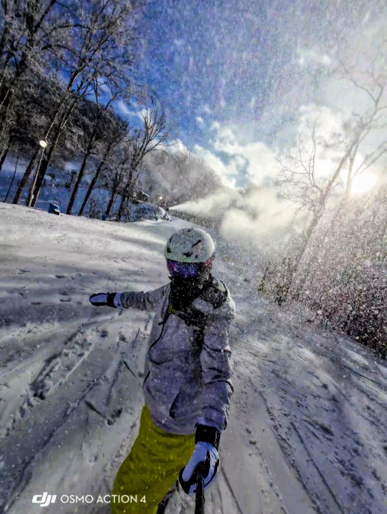
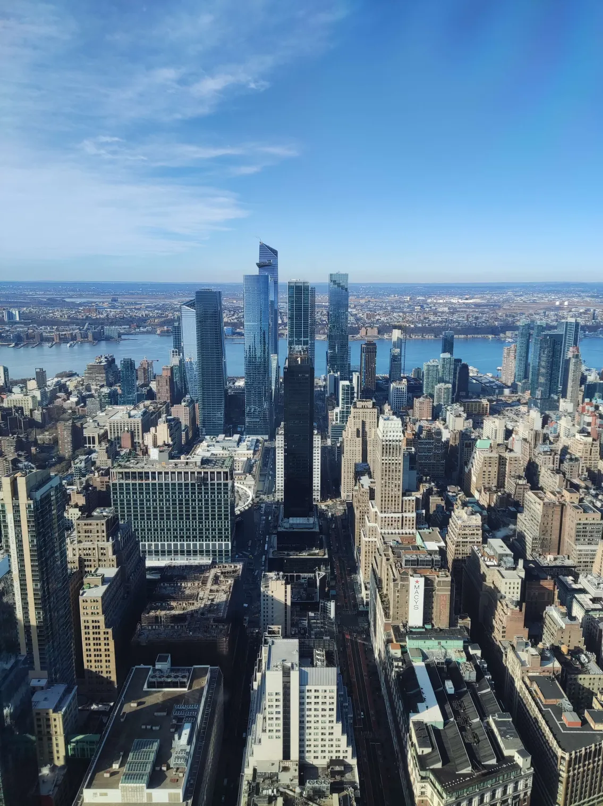

Hobbies
Outside of research, I enjoy snowboarding, playing tennis, and traveling. These activities help me relax, stay active, and explore new experiences.
Snowboarding
Snowboarding is my favorite way to spend the winter. There's nothing like the feeling of carving down a fresh slope on a cold, sunny morning.

Tennis
I like playing tennis as a fun way to stay active. It's a great mix of strategy and exercise, and a nice excuse to spend time outdoors with friends.
Travel
I love exploring new places, from historic landmarks to modern city skylines. Every trip gives me a fresh perspective and new stories to tell.
